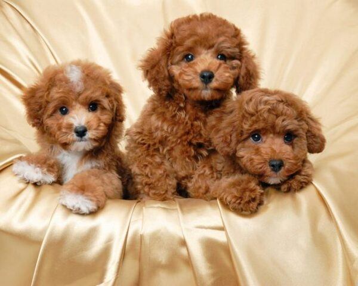

Tổng hợp các loài chó cảnh
Dưới đây là tổng hợp chó cảnh loài đại diện ở thế giới cũng như ở Việt Nam. Chó cảnh loài đại diện là những chú chó nổi tiếng nhất và được nuôi nhiều nhất.
1 Chó Pug
Nguồn gốc thật sự của những chú chó Pug “mặt xệ” hiện nay vẫn chưa được xác định. theo nhiều nguồn thông tin thì chú chó “mặt xệ” này đã xuất hiện từ thời nhà Hán - Trung Quốc vào khoảng những năm 200 TCN. Lúc bấy giờ, chó Pug được xếp vào dòng dõi quý tộc, được hưởng thụ cuộc sống xa hoa và những người nuôi chó Pug chủ yếu là quan lại, hoàng thân, quốc thích Trung Quốc.

Đặc điểm
Chú chó Pug có chiều cao từ 25 - 35 cm và có cân nặng khoảng 6 - 10kg. Sở hữu chiều cao lùn và thân hình to mập nên chó Pug có thân hình vuông. Lưng Pug thẳng, không lõm cũng không căng nên chúng có dáng đi khá oai vệ và vững chắc. Chó Pug có làn da khá mềm và mỗi khi vuốt ve chúng sẽ cảm thấy vô cùng dễ chịu. Những chú chó Pug thuần chủng sẽ có đầu hình vòng cung khi nhìn ngang. Đặc biệt, chúng hầu như không có xương mũi, vì vậy chúng thường gặp khó khăn khi hít thở. Còn khi nhìn chính diện thì chó Pug có khuôn mặt to tròn với nhiều nếp nhăn xếp chồng lên nhau. Nếu những con chó Pug nào càng nhiều nếp nhăn càng được yêu thích.

Chó Pug sở hữu những đôi mắt to tròn và lồi, những chú chó Pug thuần chủng mắt sẽ có màu sẫm. Tai chúng luôn luôn cụp và to. Khuôn miệng chúng khá rộng, phần xương hàm to và chắc khỏe. Riêng hàm dưới sẽ hơi nhô so với hàm trên. ... Trái với khuôn mặt dữ dằn và nghiêm túc, tính cách chó Pug lại rất hiền lành và hòa đồng. Hơn nữa, chúng cực kỳ thông minh, lanh lợi, trung thành và rất thân thiện với con người và những chú chó khác.
2 Chó Poodle
Chó Poodle được biết đến ở Tây Âu vào khoảng 400 năm trước và chúng chính là hậu duệ của các giống chó như French Water Dog, Hungarian Water Hound và Barbet. Ngày nay, con người đã lai tạo giống chó săn vịt này thành một hình tượng quý tộc và xinh xắn, trở thành chú chó được nhiều người yêu thích.
Đặc điểm
Những chú chó Poodle luôn khiến người khác đổ gục bởi vẻ ngoài xinh xắn và đáng yêu của mình. Nổi bật hơn hết là bộ lông xoăn đặc trưng với các màu như nâu đỏ, trắng, đen, vàng mơ, kem, xám, trắng, socola. Về tính cách thì hầu hết nhà Poodle đều là những chú chó thân thiện, nghịch ngợm và thông minh. Đặc biệt, chúng học rất nhanh và khả năng học hỏi của chúng rất tốt.